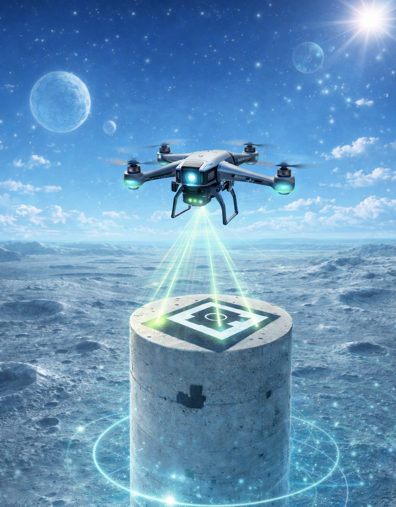
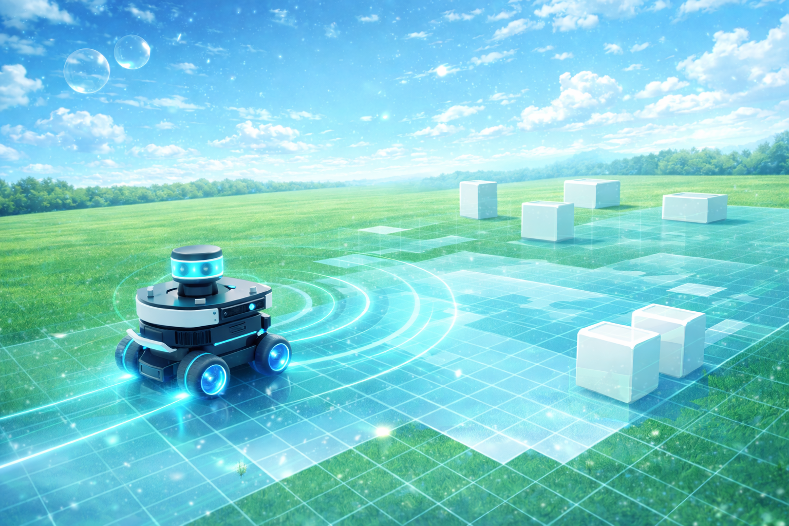

Perception/Vision
Systems that transform raw sensory data into structured world understanding. The work explores semantic mapping, visual-language grounding, and perception pipelines for autonomous robotics.
The perception layer enables robots to interpret the environment by transforming sensor inputs into semantic representations. These works explore mapping pipelines, visual-language embeddings, and spatial mechanisms that help robots reason about objects, environments, and goals.
Perception Systems Archive
Click any panel to open the GitHub repository.

Reflectivity-Augmented LiDAR Scene Understanding for Robotic Perception
Reflect-Aug-Seg studies whether a simple reflectivity-style transformation of raw LiDAR intensity can expose more structured and stable behavior for semantic scene understanding. The core issue is that raw intensity is not a clean surface descriptor, but is entangled with range, geometry, and sensing conditions, limiting its direct semantic use in practice. Instead of attempting full reflectivity recovery, the framework introduces a lightweight pseudo-reflectivity signal from intensity and range, treated as a controlled transformation. The goal is not physical recovery, but to test whether this signal behaves more consistently than intensity across semantic structure and short-horizon motion windows. The evaluation is deliberately scoped. Using SemanticKITTI, the system analyzes class-wise distributions, separability, and temporal stability across small motion windows, supported by visualization and statistical inspection. The focus is on signal behavior, not on training a full model or claiming end-to-end performance gains. This work is positioned as a perception analysis study, not a complete system. It does not claim calibrated reflectivity or universal improvement. Instead, it establishes whether reflectivity-inspired augmentation provides a measurable but limited structural advantage over raw intensity, and where that advantage holds or breaks down across scenarios. The result is a modular, interpretable pipeline for studying reflectivity-aware cues in LiDAR perception.
Open Repository
VLMaps Reimplementation
VLMaps Reimplementation is a semantic mapping framework that bridges geometric robot mapping with open-vocabulary visual–language understanding to enable language-conditioned navigation in previously unseen environments. The system reconstructs persistent top-down semantic maps from RGB-D observations by projecting visual embeddings from models such as CLIP and LSeg into a spatial representation aligned with the robot’s geometric map. This fusion allows natural language queries to be grounded directly in the environment, enabling robots to interpret commands like locating objects or navigating to semantically defined regions without requiring predefined class labels. Designed as a transparent and reproducible implementation of the Visual Language Maps paradigm, the framework exposes the full pipeline of embedding extraction, 3D back-projection, semantic map construction, and query-based navigation. By combining open-vocabulary perception with spatial memory, the system demonstrates how modern vision-language models can extend robotic autonomy beyond fixed taxonomies toward flexible human-robot interaction. The result is a modular research platform for exploring language-driven navigation, semantic scene understanding, and scalable robot perception in real-world environments.
Open RepositorySparse-Image Lunar 3D Reconstruction
ApolloSplat-Py is an image-based reconstruction pipeline that converts a short Apollo 17 lunar image sequence into a usable 3D terrain asset. The project uses classical photogrammetry rather than learned reconstruction as the primary baseline, applying COLMAP structure-from-motion and multi-view stereo to recover geometry from sparse historical monocular imagery. The perception problem is constrained. Only 15 Apollo 17 frames are used, with limited viewpoint diversity, unknown capture conditions, and imperfect overlap. The pipeline therefore emphasizes geometric consistency, diagnostic visibility, and honest reconstruction limits instead of treating the output as a perfect object scan. After preprocessing, COLMAP extracts and matches visual features, estimates a sparse camera/point model, runs dense PatchMatch stereo, and fuses depth maps into a colored point cloud. The dense reconstruction contains over 580k points and is used to generate competing Poisson and Delaunay mesh candidates. Robust bounding-box diagnostics and visual inspection identify Poisson reconstruction as the cleaner final mesh. The final result is a curved lunar terrain patch rather than a clean isolated object. This distinction is important: the project demonstrates geometry recovery from sparse archival imagery while exposing artifacts that arise from outliers, weak overlap, and under-sampled surface structure. As a perception study, ApolloSplat-Py shows how classical SfM/MVS can still produce meaningful robotics-ready spatial assets when paired with filtering, meshing, and quantitative diagnostics.
Open Repository
Vision-Guided Precision Landing
TerraDrop-PX4 is a compact autonomous aerial robotics project focused on vision-guided target search, visual analysis, and precision landing within a ROS2, Gazebo, and PX4 SITL pipeline. The system executes a complete mission loop beginning with autonomous takeoff and stable hover, followed by target acquisition through onboard RGB vision, ArUco-based visual alignment, camera-geometry-driven relative estimation, and controlled landing on a cylindrical target. Built as a simulation-first autonomy stack, the project integrates perception-driven decision-making, PX4 offboard control, ROS2 node orchestration, and closed-loop visual servoing into one end-to-end robotic workflow. By combining target-relative navigation with lightweight geometric reasoning, TerraDrop-PX4 demonstrates how an aerial platform can move from raw visual input to mission-level task completion in a structured and reproducible environment. The framework serves as a focused experimental platform for studying autonomous drone behavior, perception-enabled landing, and tightly coupled autonomy pipelines for aerial robotic systems.
Open Repository
Label-Conditioned Robot Vision
Label-Conditioned Robot Vision is a generative perception framework that explores how semantic labels can act as controllable priors for visual scene synthesis in robotic perception systems. Built around conditional Generative Adversarial Networks (cGANs), the system learns to generate images conditioned on symbolic labels, enabling structured control over visual content while preserving the statistical properties of real-world datasets. The framework progressively evaluates this capability across increasing visual complexity, from simple handwritten digits to fine-grained natural categories such as flowers and birds, exposing how conditional generation scales with semantic richness. Beyond image synthesis itself, the project investigates controllability, training stability, and dataset-driven failure modes that emerge when generative models are guided by semantic constraints. By framing label conditioning as a perception primitive rather than a purely artistic generator, the system demonstrates how generative models can support robotics tasks such as synthetic dataset augmentation, semantic grounding, and perception robustness testing. The result is a modular experimental platform for studying controllable visual generation and its role in next-generation robot perception pipelines. This capability enables creation of semantically structured visual data, helping accelerate the development and evaluation of perception algorithms in data-constrained robotic environments.
Open RepositoryVision-Guided Pick-and-Place
Perception-Guided Block Sorting is a compact ROS-Gazebo manipulation pipeline that detects colored blocks from RGB-D data, estimates their 3D positions through geometric transformation, and places them into matching bins using a state-machine-based pick-and-place routine. The project demonstrates a clean perception-to-action workflow combining visual detection, spatial reasoning, and task-level robotic manipulation in simulation.
Open Repository
Scan-to-Grid Mapping
Scan-to-Grid Mapping is a lightweight ROS1 perception pipeline that converts LaserScan and odometry data into a 2D occupancy grid in Gazebo. The system transforms scan measurements into the world frame, discretizes them into grid cells, and incrementally reconstructs the environment. The project highlights the geometric foundations of robot mapping through a clean and interpretable scan-to-grid workflow.
Open Repository